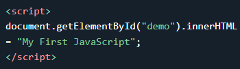
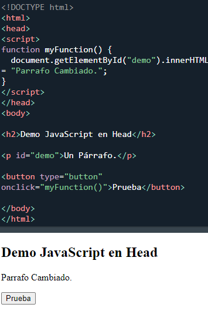
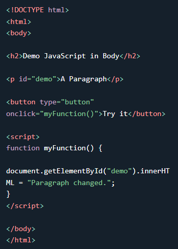
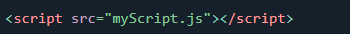
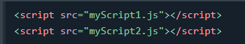
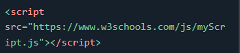

En HTML, el código JavaScript se inserta entre las etiquetas script
Puede colocar cualquier número de secuencias de comandos en un documento HTM
Los scripts se pueden colocar en las secciónes de una página HTML: head, body, o en ambos.
La función se invoca (llama) cuando se hace clic en un botón:
En este ejemplo, se coloca JavaScript en la sección body de una página HTML.
Los scripts externos son prácticos cuando se usa el mismo código en muchas páginas web diferentes.
Los archivos JavaScript tienen la extensión de archivo .js
Para usar una secuencia de comandos externa, coloque el nombre del archivo de secuencia de comandos en el atributo src (fuente) de una etiqueta script
Se Puede colocar una referencia de secuencia de comandos externa en head o body.
El script se comportará como si estuviera ubicado exactamente donde se encuentra la etiqueta.
Los scripts externos no pueden contener etiquetas script.
Colocar scripts en archivos externos tiene algunas ventajas:
Para agregar varios archivos de script a una página, use varias etiquetas script:
Se puede hacer referencia a un script externo de 3 maneras diferentes:
Este ejemplo utiliza una URL completa para vincular a myScript.js:
Puede leer más sobre rutas de archivos en el capítulo :
Rutas de archivos HTML.